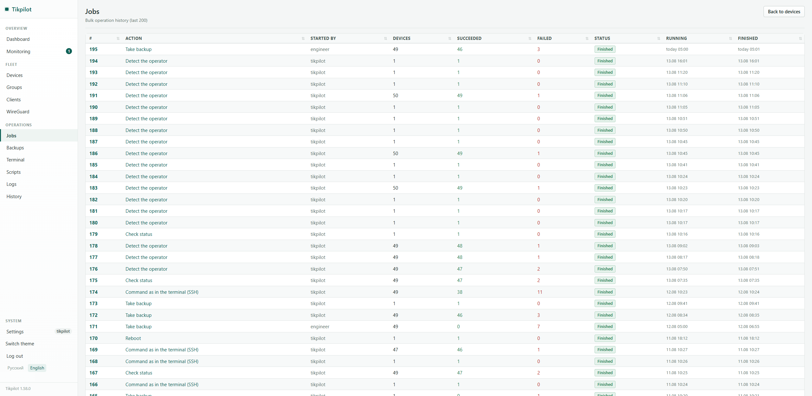

Bulk RouterOS upgrade across a fleet
Upgrading one MikroTik is easy. Upgrading fifty, half of them a hundred kilometres away, is frightening: any of them can stop answering after the reboot. Here is what to check first and in what order to work.
What people are actually afraid of
The fear is justified, just not where it seems.
The upgrade itself rarely bricks a router. What breaks is everything around it: the disk ran out of space and the package downloaded halfway, the board is still on an old bootloader, an interface came back up with different settings, the provider handed out a different address. The router is alive and working, but you can no longer manage it, which amounts to the same thing except somebody still has to drive out there.
Hence the rules below. They are not about how to upgrade, they are about not ending up with ten unreachable sites at once.
What to check before pressing the button
- Free space. The package needs room next to what is already there. On boards with 16 MB of flash this is the first thing to fail.
- Who is on which version. A fleet is almost never uniform: some sites were installed two years ago and never touched. Going from 6.x to 7.x is not the same job as 7.19 to 7.21.
- The channel. long-term for production sites: only fixes, without new features and the surprises that come with them.
- A fresh backup. Binary copy and text export taken before the install, not a month ago.
- Whether anyone can get there. A site nobody will reach this week should be upgraded last.
Why batches rather than all at once
The temptation to select all forty-nine and go for coffee is understandable, but one bad site is a trip and ten at once is a day of work and an awkward conversation. A sensible order: two or three non-critical sites first, look at the result, then the rest in batches of five with a pause between them. The pause is not for the routers, it is for you: two minutes is enough to see whether the previous batch came back, and to stop if it did not.
Second rule: a maintenance window. A reboot is a minute or two without a link, and during that minute the shop cannot take cards. Night is more honest than any explanation afterwards.
How this looks in the panel
The same order, without walking WinBox one window at a time.
- "Check for RouterOS updates" across the fleet. It installs nothing, it just asks every site for its current and available version. After that you know who needs the upgrade at all.
- "Upgrade RouterOS" on the selected sites. Before installing, the panel pulls a backup and an export to the server, then waits for the packages to download (up to thirty minutes by default, longer on a thin link), reboots and waits for the device to come back.
- Batches of five with a two-minute pause are the defaults, and both are editable in the same dialog. "All at once" is available, but as a deliberate choice rather than an accident.
- Deferred start at 02:00. The job waits for its time and starts on its own.
- A result per device. You see which three sites out of forty-nine failed and why. If the version after the reboot is not the one expected, the panel says so instead of drawing a tick.
{kind=link}

A job with a result per site. Taken from a live fleet of 49 routers; names and addresses are replaced by the panel itself.
The RouterBOOT bootloader
A separate point people forget. The board firmware is not updated together with RouterOS; it takes its own command and another reboot. Do it only where someone can reach the site if it goes wrong: a failed bootloader upgrade is fixed with netinstall, which means a cable and hands. In the panel it is a separate checkbox, unticked by default.
When a site does not come back
First work out what exactly is silent. If the site answers ICMP but the API does not, the router is alive and the problem is the service or the link: no trip needed. The panel separates those two cases and shows them differently, because the difference between them is several hours of driving.
If it is silent altogether, someone has to go. The backup taken before the install is on the server, so restoring is uploading a file rather than configuring the site from scratch.
git clone https://github.com/maximdr86/tikpilot
cd tikpilot && cp .env.example .env
docker compose up -dFrequently asked
Can an upgrade be rolled back?
The router has /system/package/downgrade, but it installs
whatever previous version is still on the disk and does not always work.
Safer not to roll back but to not rush: batches, and a fresh backup
before installing.
Which channel?
long-term for production sites. Stable is for when you need a specific new feature and have someone to deal with the consequences.
Do the routers need internet access?
Yes. Each device fetches the packages from MikroTik servers itself. The panel gives the order, it does not serve the files.
Can scripts be run in bulk the same way?
Yes, that is the neighbouring action: the script lives in the panel's library, runs on the selected sites, and there is a result for each one. You can also see which sites already have the script and which do not.